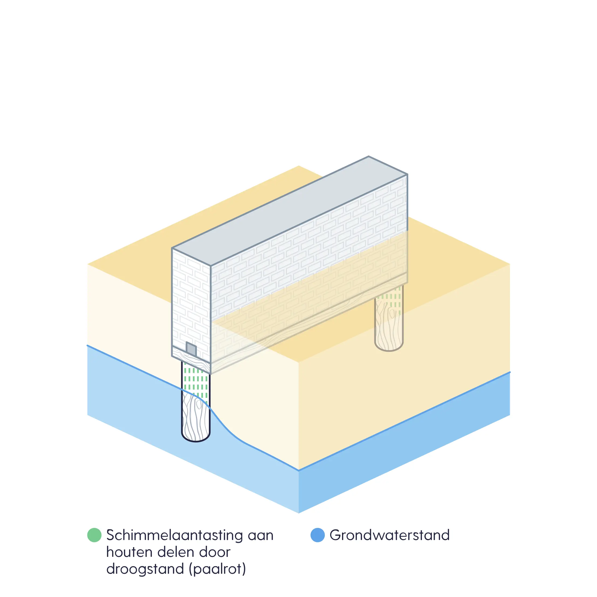
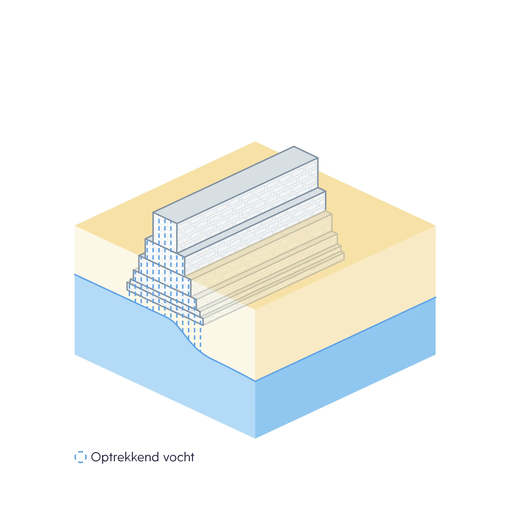
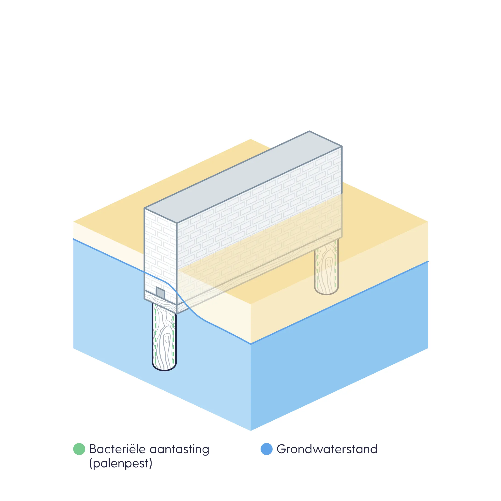
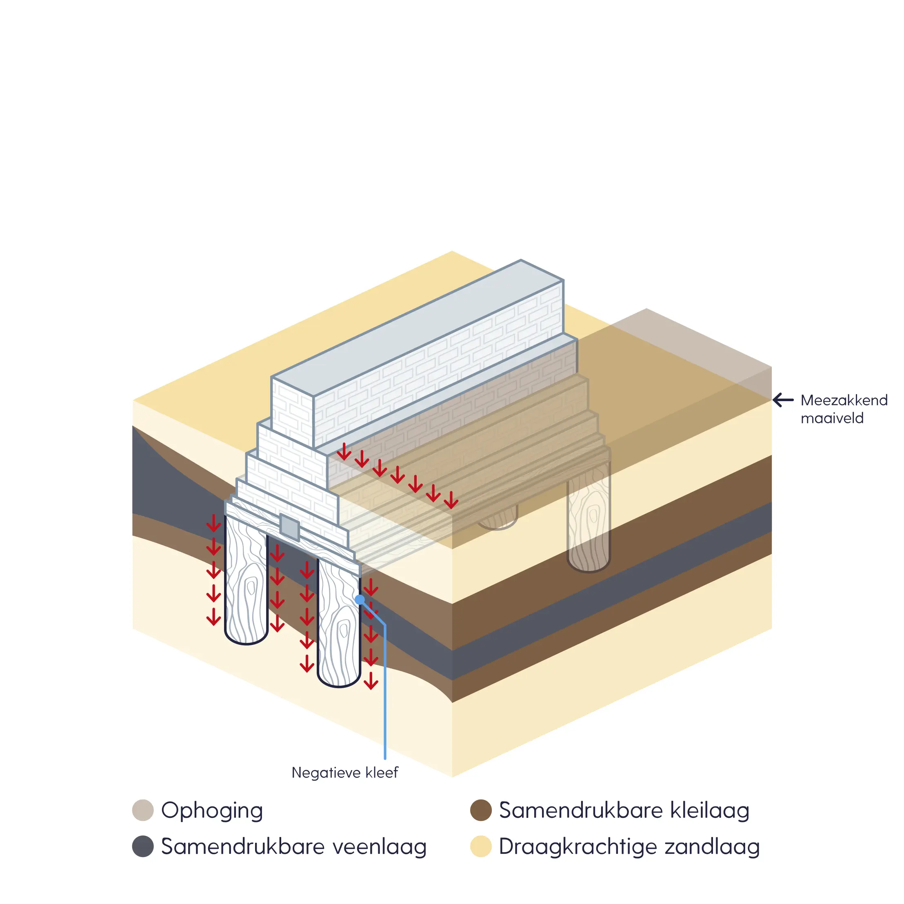

De rekenmethode kent vier funderingsrisico's. Per risico staat hieronder wat het is, waar het speelt en wat de berekening gebruikt. Is er onderzoek aan het pand, dan gaat de uitkomst daarvan voor; zonder onderzoek wordt het risico geschat uit de kenmerken van het pand. De gemeten pandzakking uit satellietdata weegt bij de eerste drie risico's mee als aanwijzing: een pand dat sneller zakt dan verwacht, krijgt een hogere klasse.

Droogstand (paalrot)
Houten palen of langshout komen boven de grondwaterstand uit. Het hout komt in contact met zuurstof en schimmels tasten het aan.
Waar: overal waar op houten palen is gebouwd; landelijk berekend.
In de berekening: het funderingstype (houten palen, of houten palen met betonoplanger), de grondwaterstand bij het pand, bij onderzoek het houtniveau tegenover de grondwaterstand, en een verhoogde pandzakkingssnelheid als signaal.

Ontwateringsdiepte
Bij ondiepe funderingen (op staal, zonder palen) de afstand tussen de onderkant van de fundering en het grondwater. Staat het grondwater hoog, dan ontstaat optrekkend vocht en kan het pand gaan zakken.
Waar: overal waar ondiep is gefundeerd; landelijk berekend.
In de berekening: het funderingstype, de funderingsdiepte tegenover de grondwaterstand bij het pand, en de pandzakkingssnelheid als signaal.
Verschilzakking valt hieronder: panden die duidelijk sneller zakken dan hun buren en dan de bodem om hen heen. Dit wordt berekend waar satellietdata is.

Bacteriële aantasting (palenpest)
Bacteriën tasten houten palen aan, ook onder water. Het hout verliest langzaam zijn draagkracht. Grenen is gevoeliger dan vuren.
Waar: vooral in Noord- en West-Nederland, waar korte palen in een ondiepe zandlaag staan. Waar langere palen tot in een diepere zandlaag zijn gebruikt, zoals in Rotterdam, komt het minder voor.
In de berekening: het funderingstype, de paallengte (hoe korter, hoe hoger het risico) en een verhoogde pandzakkingssnelheid als signaal.

Overig risico
Risico's die uit onderzoek aan het pand zijn vastgesteld en niet onder de andere drie vallen. Dit risico wordt niet geschat; het bestaat alleen waar onderzoek ligt.
Hieronder vallen onder meer:
Negatieve kleef: zakkende grondlagen die de paal meetrekken, vooral in de regio Rijnmond en de Drechtsteden.
En verder overbelasting, constructiefouten en trillingen, zoals het onderzoek ze vaststelt.